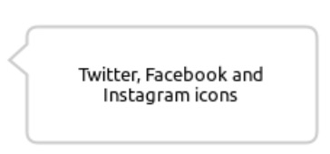

Main Section
Amet lorem accusantium maxime quis iusto. Sit aliquid quidem at animi commodi, iusto harum, non. Accusantium sequi consectetur deleniti soluta tempora. Maxime maiores blanditiis veritatis vitae amet maiores sapiente in?